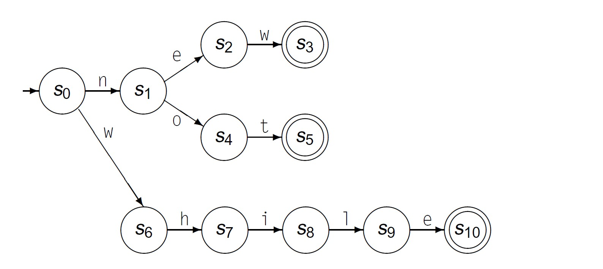

Frank Coelho de Alcantara - 2020
Usaremos máquinas de estado finito determinísticas e vamos mostrar apenas as transições que realmente levam para outros estados.
COOPER, K. D.; TORCZON, L. Engineering a Compiler. 2º. ed. London, UK: Elsevier, 2012.
$MEF=\{S, \Sigma, \delta, s_0, A\}$
$MEF=\{\{s_0, s_1, s_2, s_3, s_4, s_5, s_6, s_7, s_8, s_9, s_{10}\}, \\ \{e, h, i, l, n, o, t, w\};\\ \{\delta_{(s_0,n)}=s_1, \delta_{(s_0,w)}=s_6, \\ \delta_{(s_1,e)}=s_2, \delta_{(s_1,o)}=s_4, \\ \delta_{(s_2,w)}=s_3, \\ \delta_{(s_4,7)}=s_5, \\ \delta_{(s_6,h)}=s_7, \\ \delta_{(s_7,i)}=s_8, \\ \delta_{(s_8,l)}=s_9, \\ \delta_{(s_9,e)}=s_{10}\}, s_0 = s_0, A=\{s_2, s_5, s_{10}\} \}$
E apontamos todos os símbolos que não interessam para um estado de erro $s_e$ de tal forma que: $\delta_{(s_i,\{x|x \notin \Sigma\})}=s_e$
COOPER, K. D.; TORCZON, L. Engineering a Compiler. 2º. ed. London, UK: Elsevier, 2012.
Sem código, não há progresso. Usando o site repl.it crie um código, na sua linguagem de programação preferida, que seja capaz de implementar a máquina de estados finitos que definimos para not, new e while.
Lembre-se que não é qualquer código, para reconhecer not, new e while é um código que implemente a $MEF$ que definimos. Ou seja, todos os estados e transições devem estar presentes e identificados no seu código.
Quando terminar, poste o seu código Aqui!
Crie uma MEF e o código para identificar nomes de variáveis em C segundo a seguinte regra:
Para simplificar a tabela ao lado contém a lista de lexemas reservados do C..
Quando terminar, poste o link para o seu código Aqui!
| auto | double | int | struct |
| break | else | long | switch |
| case | enum | register | typedef |
| char | extern | return | union |
| continue | for | signed | void |
| do | if | static | while |
| default | goto | sizeof | volatile |
| const | float | short | unsigned |
Você pode baixar o material de apoio clicando aqui